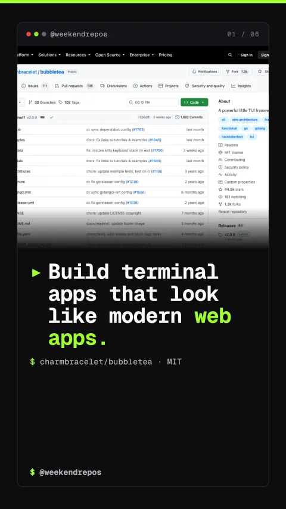

charmbracelet/bubbletea
Build modern reactive terminal user interfaces in Go using Elm

Build terminal apps that look like modern web apps.
Bubble Tea brings the reactive Elm architecture to the terminal.
First, everything is functional. Instead of manually mutating terminal screen buffers, your UI is a pure function of state, split into Model, Update, and View.
Functional TUI design · Model-Update-View reactive loop
Three simple methods define your entire terminal application lifecycle.
Second, building an app requires implementing just three methods: Init initializes commands, Update processes incoming keyboard and window events, and View returns the final rendered string.
Standard Go interface · pure state transitions and renders
Pair with Lip Gloss and Bubbles for layouts, spinners, and tables.
Third, Bubble Tea connects directly into Charm's modular ecosystem. Use Lip Gloss for CSS-like styling and borders, and Bubbles for pre-built components like file pickers, pagers, and spinners.
Lip Gloss & Bubbles · rich styling, tables, and spinners
Real-time event dispatching handles keys, mouse clicks, and window resizing.
Fourth, Bubble Tea handles terminal quirks out of the box. It supports full mouse tracking, bracketed paste, high-performance alternate screens, and 60-frame-per-second smooth renders.
Native keyboard & mouse · 60fps terminal rendering
Bubble Tea powers Docker, GitHub CLI extensions, and modern dev tools.
With over 44,000 GitHub stars and an MIT license, Bubble Tea has become the gold standard for developer tools. Clone the repo or run go get to upgrade your command line.
44.9k stars · MIT licensed · built by Charmbracelet